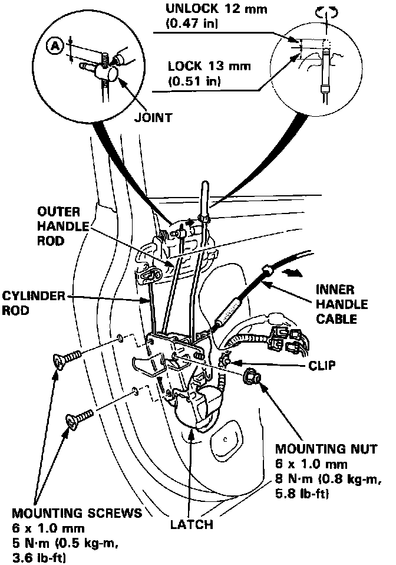

Front Door Latch: Service and Repair
Latch ReplacementNOTE: Raise the glass fully.

1. Remove:
^ Door panel
^ Plastic cover
^ Rear channel
2. Pry the outer handle rod and cylinder rod out of its joint using a flat tip screwdriver.
Disconnect the connectors and detach them from the door.
Remove the mounting screws and nut, then remove the latch through the hole in the door.
NOTE:
^ Take care not to bend the inner handle cable.
^ To ease reassembly, note the location (A) of the outer handle rod on the joint before disconnecting it.
3. Installation is the reverse of the removal procedure.